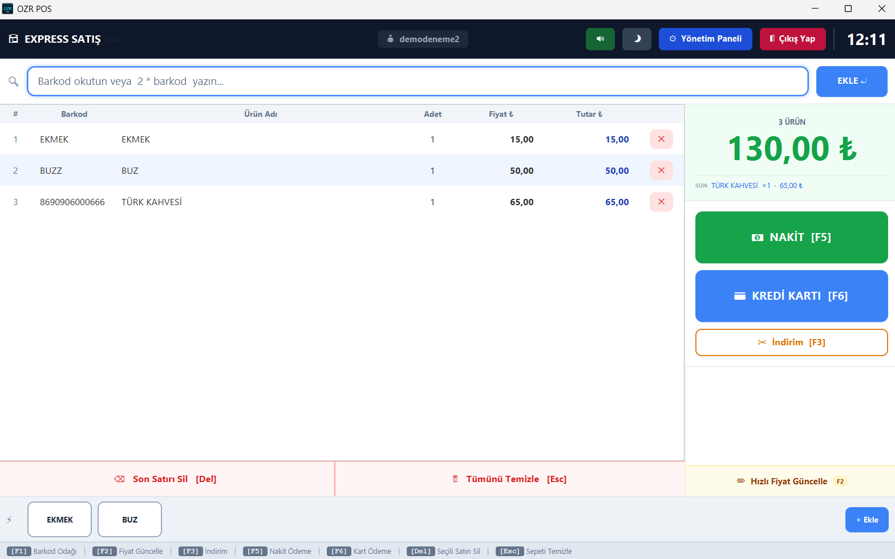
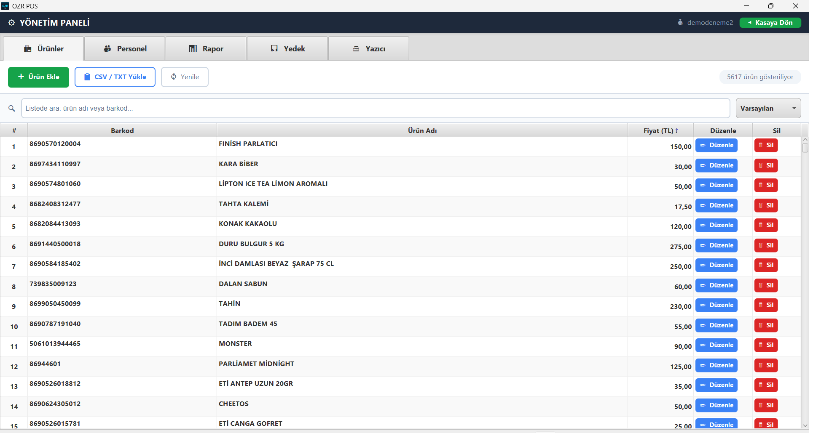
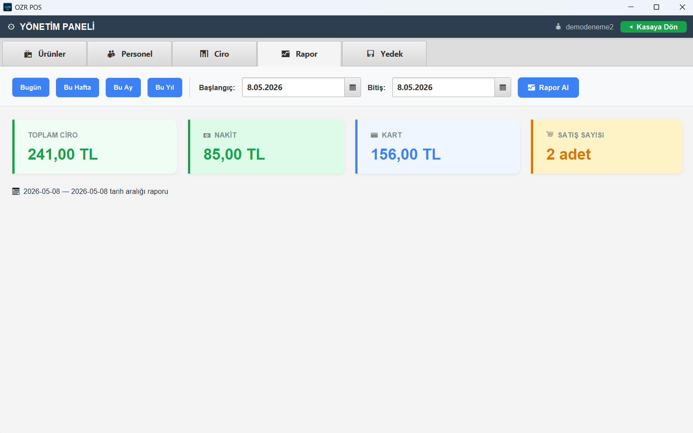
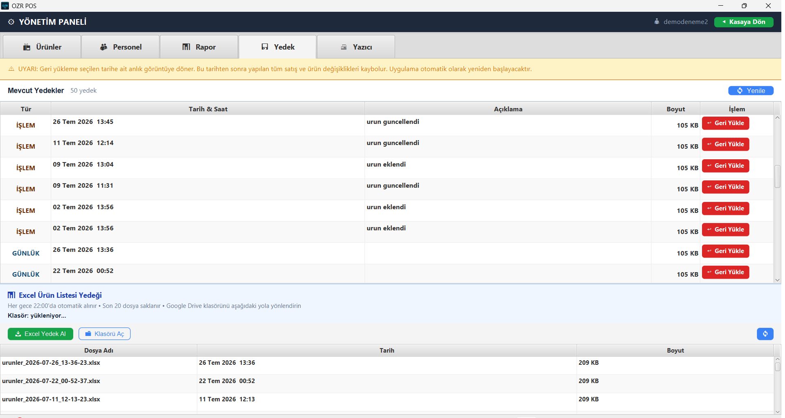
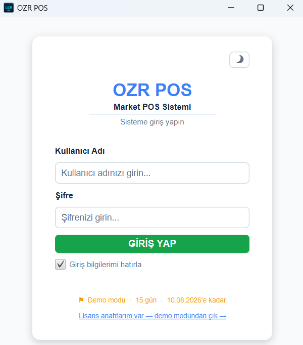
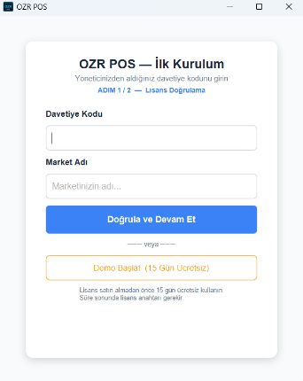
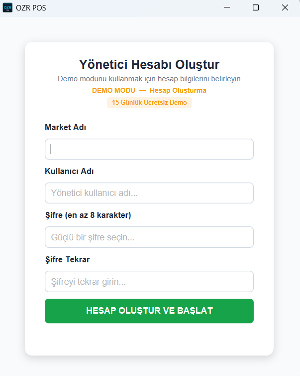
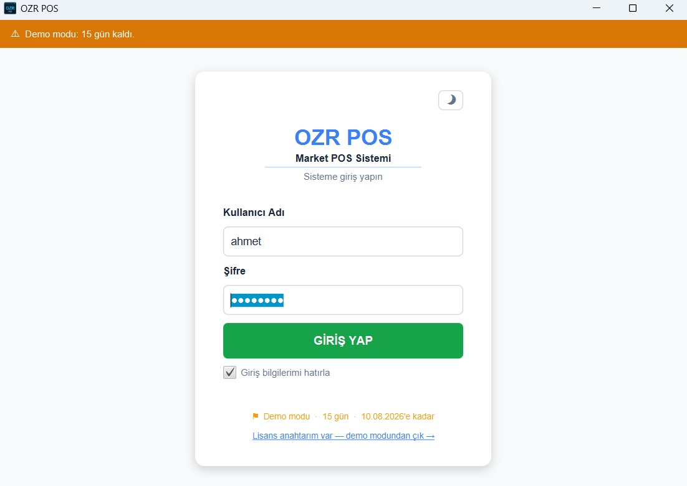
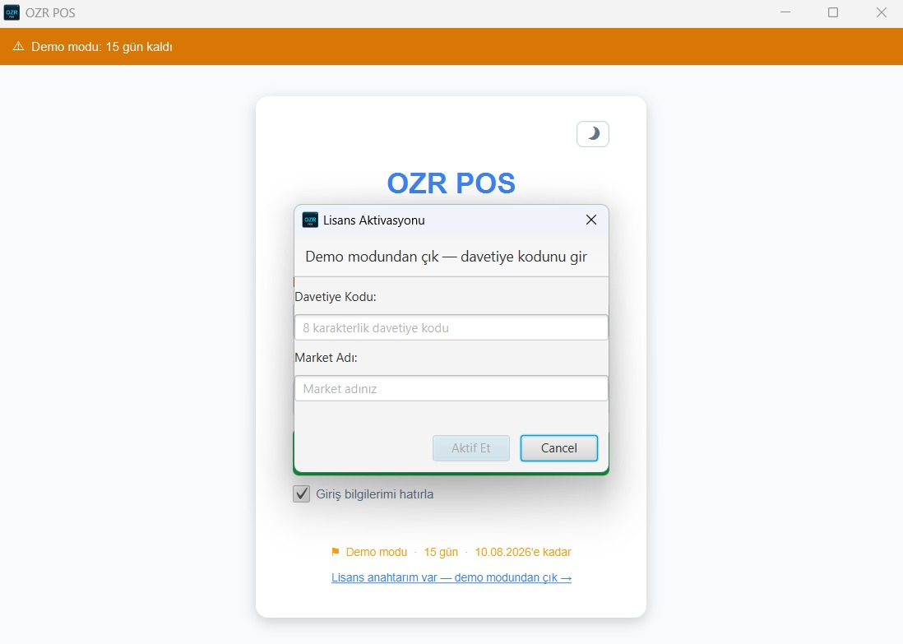

Barkodu okutun, satışı kapatın. OZR POS kasanızı hızlandırır, verilerinizi her gün otomatik yedekler ve internet kesildiğinde bile çalışmaya devam eder.
✓ Kredi kartı gerekmez · ✓ 5 dakikada kurulur · ✓ Kurulum desteği bizden

OZR POS market işletmecileriyle birlikte geliştirildi. Karmaşık menüler yok — kasiyeriniz ilk gün öğrenir.
Okut, Enter'a bile basma — ürün sepette. Miktar öneki (3×), hızlı ürün tuşları ve F5-F5 ile saniyeler içinde satış.
Aynı anda 3 müşterinin sepetini ayrı tutun. Müşteri "kartımı unuttum" mu dedi? Ctrl+2 ile sıradakine geçin.
Her gece otomatik şifreli yedek + her satış sonrası anlık yedek. Bilgisayar bozulsa bile verileriniz güvende.
Termal yazıcınızdan market adınızla bilgi fişi yazdırın. Türkçe karakter desteğiyle, ayar gerektirmeden.
Günlük, haftalık, aylık ve tüm zamanlar cirosu; nakit/kart ayrımı ve satış adedi. Tüm verilerinizi tek tıkla Excel'e aktarıp muhasebecinize gönderin.
Her kasiyere ayrı giriş şifresi; yönetim ekranına yalnızca siz girersiniz. Ayrılan kasiyerin kaydını kapatın, satış geçmişi kaybolmaz.
Veritabanınız şifreli saklanır, yedekleriniz AES-256 ile korunur. Verileriniz kendi bilgisayarınızda kalır, kimseyle paylaşılmaz.
Yeni özellikler ve düzeltmeler kendiliğinden gelir. Siz hiçbir şey yapmazsınız — program kendini günceller.
Gereksiz hiçbir buton yok. Kasiyeriniz eğitim almadan kullanmaya başlar.




Kredi kartı istemeyiz, otomatik ödeme almayız. Süreç ekran ekran tam olarak böyle işler:

Kurulumdan sonraki ilk ekranda iki seçenek var: elinizde davetiye kodu varsa girin, yoksa tek tıkla demoyu başlatın. Kart bilgisi istemiyoruz.

30 saniye sürer. Market adınızı, kullanıcı adınızı ve şifrenizi belirleyin — kayıt tamamlanır tamamlanmaz kasaya geçip satışa başlayabilirsiniz.

Kalan gün sayısı her girişte üstte görünür — sürpriz kısıtlama veya gizli özellik yok. Tüm özellikler, tüm ürün ve satış kapasitesiyle tam çalışır.

WhatsApp'tan bize ulaşın, size özel davetiye kodunuzu iletelim. Kodu bu ekrana girin — verileriniz aynen kalır, kaldığınız yerden devam edersiniz.
15 gün boyunca tüm özellikler ücretsiz ve sınırsız. Beğenmezseniz silersiniz, kimse sizi aramaz.
Demo kurulumu, fiyat teklifi veya cihaz uyumluluğu — ne olursa olsun yazın, aynı gün dönüş yapalım.
veya arayın: 📞